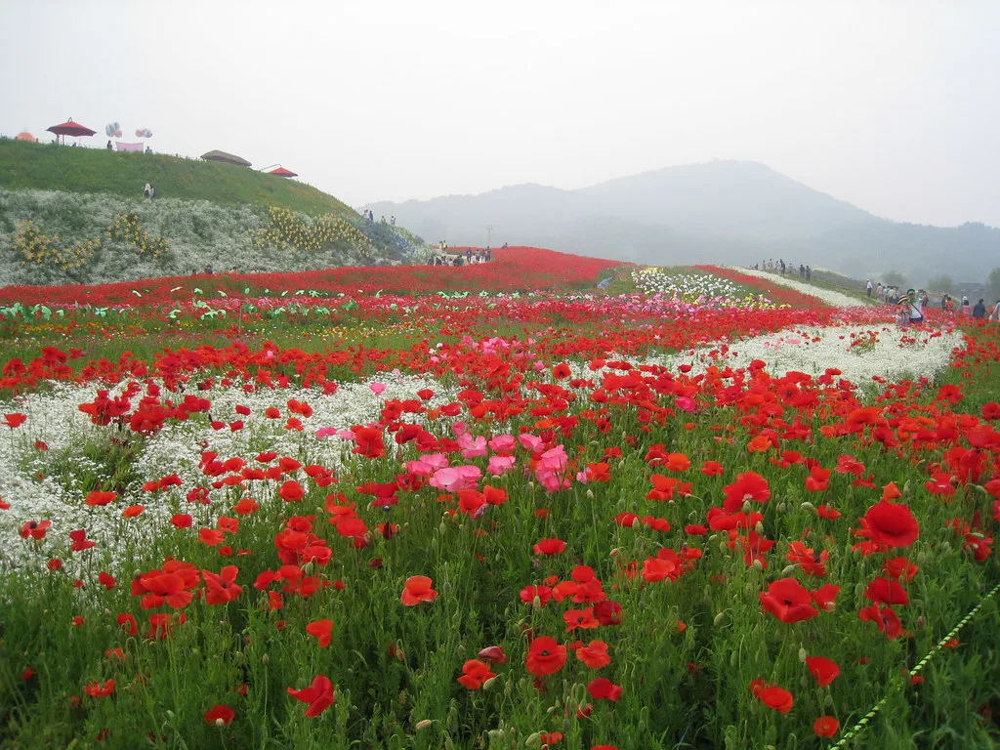
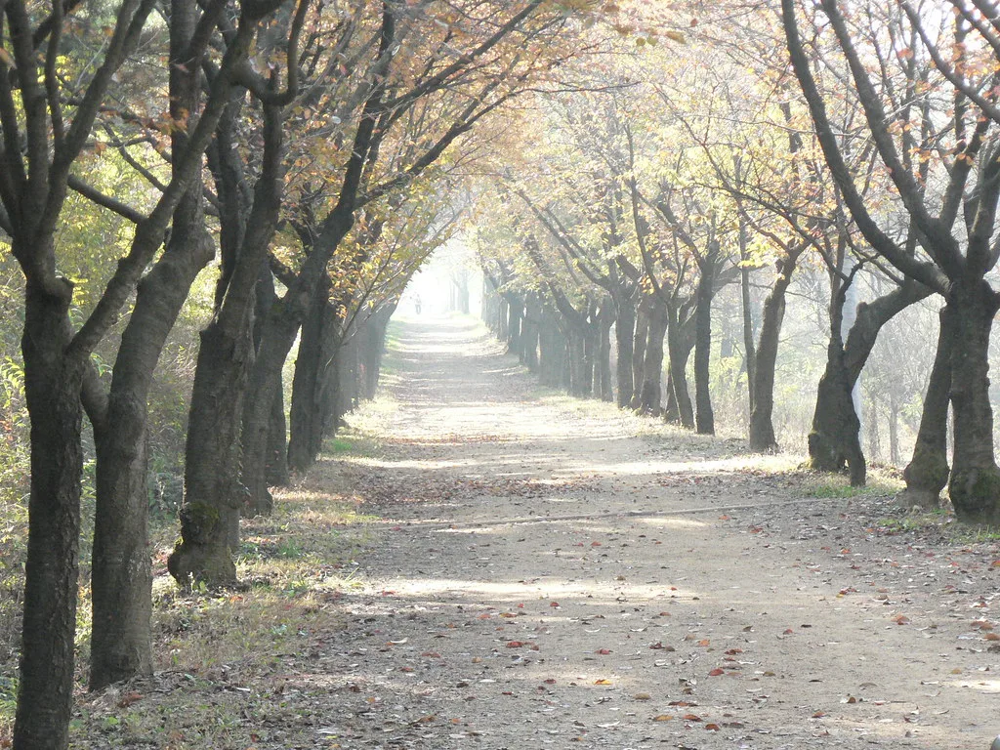

농어촌 기본소득 시범사업 7개 군, 28일부터 첫 지급…월 15만원 상품권
올해 새로 선정된 7개 군의 농어촌 기본소득이 28일부터 주민들에게 처음 지급된다. 대상 지역 주민은 나이나 소득에 관계없이 1인당 매달 15만원을 지역사랑상품권으로 받는다. 지방 소멸 위기에 대응해 소득을 직접 보전하는 방식이 실제 현장에서 어떤 효과를 내는지 확인하기 위한 시범사업으로, 지난해 시작된 사업의 대상지를 넓힌 것이다.
정부와 지방자치단체 설명을 종합하면 이번 추가 대상은 전남 구례·보성, 강원 화천, 충북 보은, 전북 진안·무주, 경북 청송 등 7개 군이다. 이 가운데 구례·보성·화천·보은·청송군은 28일 첫 지급에 들어가고, 진안군은 31일, 무주군은 지역화폐 시스템 이관 작업을 마친 뒤 9월 10일부터 지급한다. 사업 대상지로 선정되기 전부터 해당 지역에 계속 살아온 주민에게는 7월분을 소급 적용해, 이번 첫 지급 때 두 달치가 함께 들어간다.

지급액은 지역 안에서만 쓸 수 있는 상품권 형태로 지역사랑상품권 가맹점에서 사용할 수 있다. 현금이 아닌 상품권으로 주는 것은 지원금이 대도시나 온라인으로 빠져나가지 않고 지역 내 소상공인 매출로 돌아가도록 하기 위한 장치다. 실제로 앞서 사업을 시행한 지역에서는 전통시장과 동네 상점의 이용이 늘었다는 평가가 나온 바 있어, 이번 확대 지역에서도 비슷한 소비 흐름이 나타날지 주목된다.
주민들의 관심도 높다. 지자체 집계 기준 8월 23일 현재 신청률은 92.7%까지 올라갔다. 대상 지역에 주소를 두고 실제 거주하는 주민이라면 대부분 신청을 마친 셈이다. 각 군은 아직 신청하지 않은 주민을 대상으로 읍·면 행정복지센터 방문 접수와 찾아가는 상담을 병행하고 있으며, 뒤늦게 신청하더라도 요건을 갖추면 소급해 지급받을 수 있다고 안내한다. 지급은 매달 정해진 날짜에 이뤄지며, 상품권은 카드형과 지류형 등 지역별로 운영 방식이 조금씩 다르다.
이번에 선정된 7개 군은 대부분 인구가 수만 명 안팎인 소규모 농산촌 지역이다. 이들 지역은 젊은 층이 도시로 빠져나가면서 학교와 병원, 대중교통 같은 기본 인프라가 줄어드는 악순환을 겪어 왔다. 지자체들은 기본소득이 주민의 실질 구매력을 높여 지역 상권을 지탱하고, 나아가 귀농·귀촌을 고민하는 사람들에게 정착을 결심하게 하는 유인이 될 수 있을지 기대를 걸고 있다.

농어촌 기본소득은 인구 감소와 고령화가 빠르게 진행되는 지방의 활력을 되살릴 수 있는지를 두고 오래 논의돼 온 정책 실험이다. 찬성하는 쪽은 청년의 지역 정착과 귀농·귀촌을 유도하고 기초 생활을 떠받치는 안전망이 될 수 있다고 본다. 반대하는 쪽은 대규모 재정이 드는 데 비해 인구 유입 효과가 뚜렷하지 않을 수 있고, 지역 간 형평성 문제도 생길 수 있다고 지적한다.
정부는 이번 시범사업을 통해 지급 전후 인구 이동, 지역 소비, 주민 만족도 등을 추적해 정책 효과를 분석할 계획이다. 앞서 사업을 먼저 시작한 지역의 데이터와 비교하면 지급 규모와 기간에 따른 효과 차이도 확인할 수 있을 것으로 보인다. 다만 농촌의 구조적인 문제를 소득 지원만으로 풀기는 어려운 만큼, 의료·교육·교통 등 정주 여건을 함께 개선하는 장기 대책이 뒷받침돼야 한다는 목소리도 크다. 시범사업 결과는 향후 기본소득 제도의 확대나 조정 여부를 판단하는 근거 자료로 쓰일 전망이다.